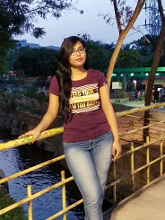

Hello. I am Pratyusha Tripathy, a 24 year old IT professional. I don't believe in working hard Beacuse I work smart. Like My name I am Positive, sunny person who love to give hope to the world just like the early moring sunrays. The one thing I don't like is to get boared. I enjoy each and every moment of my life. I don't do the thins I enjoy cause I enjoy everything I do. My hobbies, well I find a hobby in everything. I don't limit myself. no matter what anyone said I only lived how I wanted, guided by only my beliefs.


Technology Interest
New Technologies attaracts me attracts me a lot. I wanna learn all the leading technologies in my life time. Java, ruby, python, .net mvc, perl, php, sql, mango db, hadoop, bigdata and many more.IT Experince
I am Having a total 1.2 years of IT experience till date as a java developer.Project Experince
Project Name: The Home Depot (THD) Domain: Retail Role: Team member and Developer Team Size: 10 members Description and Responsibilities: • Understanding the requirement and prepare the technical design document. • Follow the architecture direction and using company’s standard procedures to prepare schema. • Prepared test cases for all possible scenarios for unit and integration testing. • Coordinate with team for task completion at buffer time. • Interact with other teams to track the status of the development. • Have worked on Server migration. • Bug fixing and maintenance activities. • Issue tracking and closure of task.
